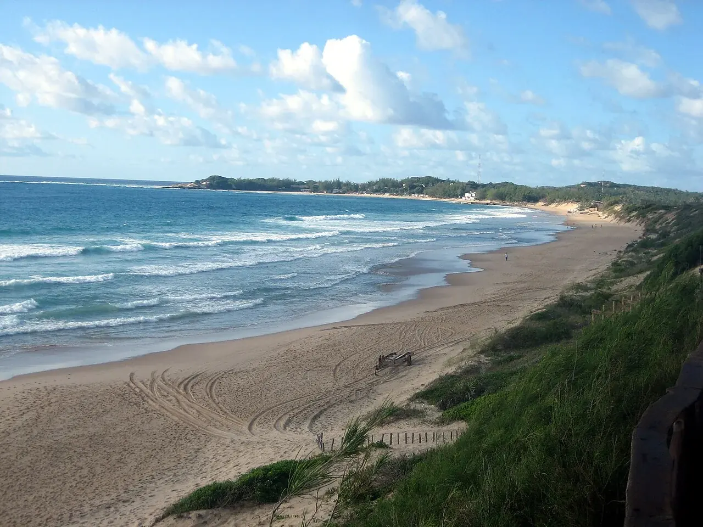

Tofo
Inhambane, Mozambique · plongée, surf

Près d’Inhambane, la plage de Tofo fait face à l’océan Indien. Le village rassemble des centres de plongée ; le surf se pratique également sur ce littoral mozambicain.
- Lieu
- Inhambane, Mozambique
- Niveau
- Variable selon les conditions
- Activités
- plongée, surf
- Type d'eau
- Mer / océan
- Coordonnées
- -23.86, 35.55 (position approximative du secteur)
Ouvrir dans Ocean Buddy Télécharger sur l'App Store
Source : Wikipédia · géographie du lieu.